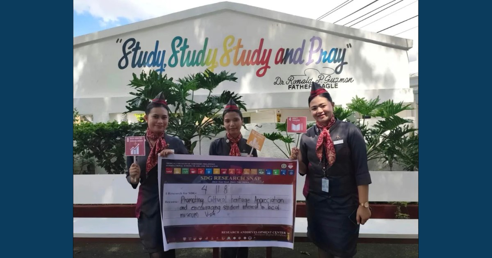

BS Tourism Management Students Strengthen Research Skills Through Proposal Defense

MCNP and ISAP supported the Research Proposal Defense of Bachelor of Science in Tourism Management students on October 12–13, 2026.
Read full article
MCNP and ISAP supported the Research Proposal Defense of Bachelor of Science in Tourism Management students on October 12–13, 2026.
Read full article